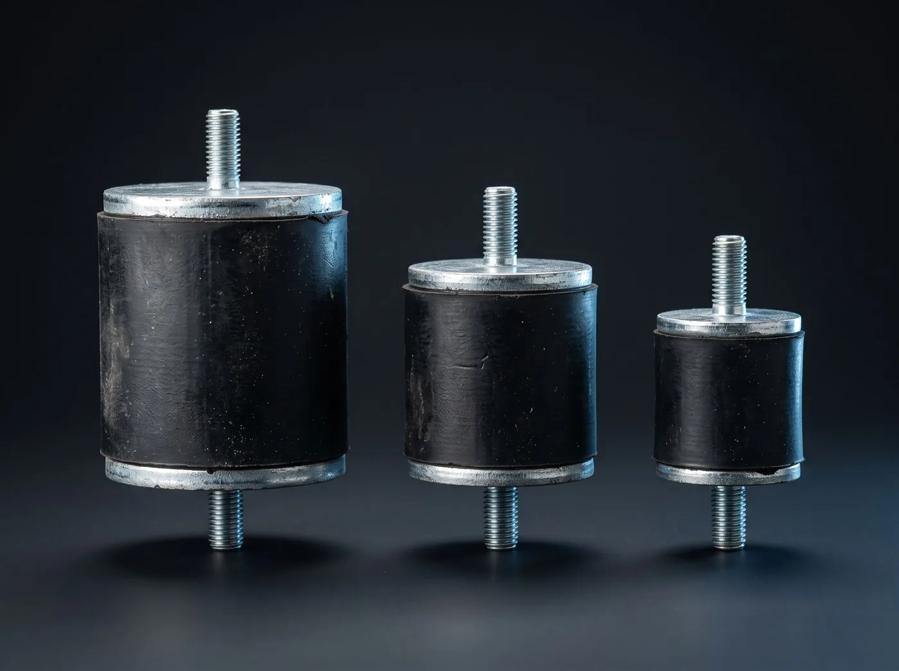

Vibrasyon Takozu
Makine ile zemin arasına giren kauçuk-metal takoz; titreşimi ve gürültüyü keser.
Vibrasyon Takozu nedir?
Vibrasyon takozu, kauçuğun iki metal plaka arasına vulkanize edilmesiyle üretilir. Makinenin ürettiği titreşim zemine geçmeden kauçuk içinde ısıya dönüşerek sönümlenir. Doğru seçilmiş takoz hem gürültüyü düşürür hem de makinenin kendi bağlantı cıvatalarının gevşemesini engeller.
Ne işe yarar?
- Titreşimin zemine ve yapıya geçmesini engeller
- Gövdeden yayılan gürültüyü belirgin şekilde azaltır
- Cıvata gevşemesini ve yorulma çatlaklarını önler
- Makinenin kendi yataklarının ömrünü uzatır
Nerede kullanılır?
- Jeneratör ve kompresör şaseleri
- Pompa ve fan kaideleri
- Gemi yardımcı makine yataklamaları
- Klima ve soğutma üniteleri
| Tipler | Civatalı (erkek-erkek, erkek-dişi), kare, çanak, konik |
|---|---|
| Kauçuk | Doğal kauçuk / NBR, 45 – 70 Shore A |
| Metal | Çelik, galvaniz kaplı |
| Ölçü | Ø20 × 20 mm – Ø100 × 75 mm |
| Yük | Tipe göre 20 – 2000 kg |
| Sıcaklık | -30 °C … +80 °C |
Ölçü katalogda yok mu?
Elinizdeki numuneden veya flanş ölçüsünden kesiyoruz. Tek adet de üretiyoruz.
Ölçü gönder